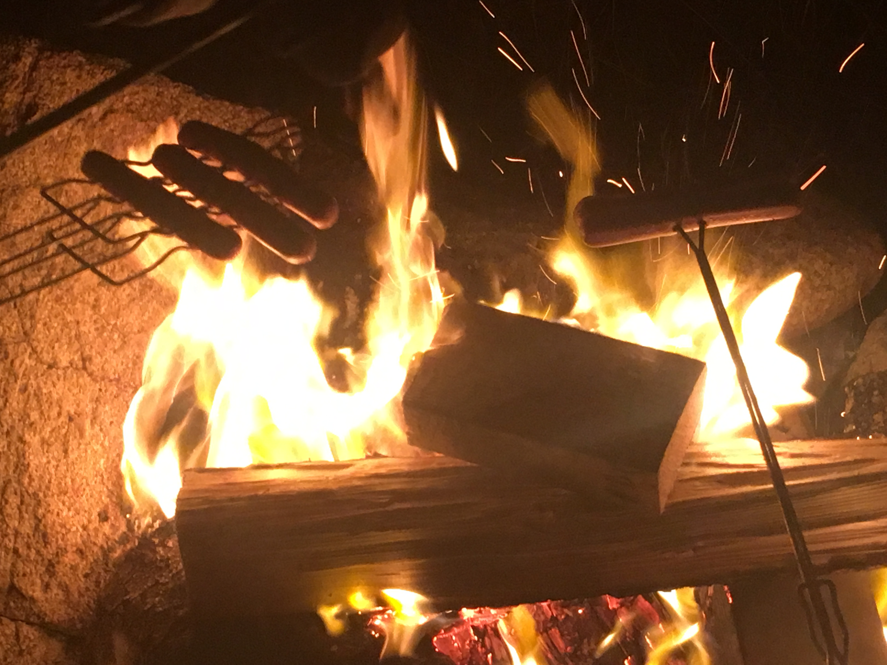

whoop, there goes parliament
2:40 pm
hey all, rust here and wait am i typing this post during school hours?!??? yep, your boy was able to somehow do an epic hacker gamer move and get visual studio code (and portablegit) running on the school computer that i use for cdli courses. pretty cool, don't you think? now, i
am using these powers respectively and only doing typing stuff during school hours when i got some free time to do whatever and the such, and today's just gonna be a bunch of presentations anyways so i don't really see why i have to be worried about it for now.
for the people who don't know, cdli is something new that's been happening with newfoundland schools if you call new a few years old, while newfoundland is over 300 years old. here's the quick rundown, cdli courses are essentially online versions of pre-existing courses, which is actually pretty cool. now i can experience the wonders of social studies on the laptop while doing something else on the other side. learning while having fun. probably one of the most rarest things you'll ever experience that isn't another nintendo edutainment game for the SNES. kinda weird how that's just really even a thing at all. mario teaches typing 2 for sure, i hope you all remember our lord and saviour, mario head, from the nintendo computer game called mario teaches typing 2.
2:50 pm
but now it's time for me to go kids, the bell is almost at 3:00 indicating that i have to go home by that time. rust_ away! vroooooooooooooooooooooom.
4:19 pm
imagine something happening at this point but i forgot to do it 2 hours later, my apologies
7:30 pm
"rust, what was with that inordinately (more than usual) large time gap between last and current timestamp?" let me actually tell you, and it's actually a valid excuse this time rather than me being lazy. i was actually off at the yearly bonfire over at the other side of my hometown. it's actually a tradition where we have this giant fire made of a bunch of rubble such as wood and other easily burnable objects such as wood and old blankets. that was actually one of the items in the fire. man, that just breaks my heart seeing a blanket go out like that, just now a bunch of hard, black ash that probably got blown off by the wind. sad times indeed if i had to be honest with you on that.
8:53 pm
the story of this odd yet interesting event is because of an event that happened many moons (years) ago. someone tried using using a bomb to blow up the canadian parliament building, which would've been very detrimental and expensive. for even attempting that, the government decided that the best way to punish this very evil-doer was to
burn him alive like a witch during medieval times, if that's how stuff used to work back in the day. that's one of the popular traits of medieval times, that trait being burning witches. wait, isn't marisa kirisame (from touhou) a sort of witch? would she have been burnt during that time? all this heat and fire discussion gives me real bfb 13/14 vibes, where the lava near the center of the earth was an obstacle.
9:03 pm
so yeah the entire holiday during the night is entirely dedicated to burning a scarecrow-like figure in order to celebrate their death. i'll admit that it's a bit barbaric, but the fire's big and great if i had to be honest. besides watching the roaring fire, some people over at the nearby bench next to the fire were serving good ol cups of hot chocolate and some marshmallows and weiners for some old fashioned roasting on a stick. i wanna go describe all of this in more detail, so i'll begin around a few hours before i showed up at the bonfire and dicuss the following events there. however, before i could do such funny things, two things.
1. im watching the entire first season of bfdi again for fun's sake, and also because it was up next with youtube's autoplay function. currently on the episode where they're doing piggyback relay racing.
2. gonna be taking a bath actually so ya'll gotta wait. give me some amount of time hol' up, hold your horse's phone guys. i'll be back in some disclosed period of time.
9:47 pm
back from the bath! anyways, now bfdi's currently on the episode where the new another name team gets into play and pen gets hurt a lot. in regards to the bonfire, lets begin from a few hours prior at around 6:50 pm. i was doing some code stuff in visual studio while eating some of my supper when i hear a knock at my door, it was actually none other than one of my past irl friend's man! my other friend was the only friend that constantly visited my house back in the day. we used to play minecraft a lot. i'm sad that he left, but i've gotten over it as it's only been a few years since i last saw him actually live where i am. anywho, the bonfire. tmy irl friend's nan asked if i as going to the bonfire, and i agreed to do so, mainly because it would've actually gone into my career hours as i was told. career hours is a school related thing when you work on a thing or attend something outside of school but influences stuff such as your learning and/or school experience, such as events hosted by student council or the school board. in this case, it was an easy hour out of the total 30 career hours that i need to acquire in order to graduate.
after getting the news, i decide to take my fluffy winter coat that reminds me of yuuri from girls' last tour and i also acquire my phone for later as i planned on taking pictures later today too. after some additional gloves, i head to the car and we're driven to a parking place near the outdoors dump after we picked up some other people such as a very young kid, which means it was their first time experiencing the large bonfire. good for them! i personally think that, again, the experience is something great to look at.
10:01 pm
so it took some walking on a rocky dirt road in order to arrive at the bonfire, which wasn't even lit yet once we arrived. when we did arrive, the bonfire appeared to be untouched, but the scarecrow was on the top of all the rubble. sorta like a moments before disaster thing. i took a picture of the sky (for some reason) alongside a very dark (lighting wise) picture of the bonfire before it was lit on fire. here's what it looks like.

11:20 pm
personally, i think it looked rather marvelous outside tonight, wouldn't you agree?despite all the grainy looks of the image because of how my iphone takes images, i still think it's a perfectly fine image of the moon. now, what does the scarecrow thingy look like? well, i helped stuff it up with newspapers at the town hall the day before, so i would know what it ooked like before it actually began to burn. in the public's case, here's how he looked


no worries guys. he's just VIBIN. anywho, yeah. he didn't last very long. he sorta just kinda died. f in the comment section for our glorious dude. we'll remember him for not doing anything good and rather on how he was executed.

anddddd he's gone. what a shame. he lost his limbs rather quickly once the fire finally got to him. imagine sitting on top of a giant fire. that wouldn't really be good for your limbs now would it. yeah, it wouldn't.
so another thing i wanted to mention earlier. during this time, some people were giving out hot chocolate alongside some roasted marshmallows and weiners. let me tell you, those roasted marshmallows were some of the best marshmallows i've tried in a while. i dunno why i never roasted them more often. i should do that in the future. i even took a picture of the thing! take a gander.

if there was one thing i could say from this experience besides of it's weird history, i would say that roasted marshmallows are some of the best things you can eat a campfire, hands down. i'm actually typing this on the 6th so that's about it for the blog post for today actually. i found this enjoyable to discuss! k bye